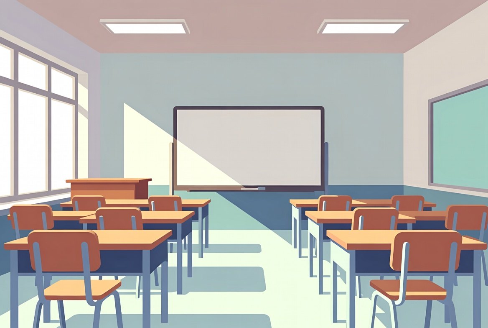

Alemão A1 · Aula 24 de 30 · GrátisNa escola e na sala de aula
Nesta aula você vai aprender a entender instruções e pedir ajuda.
 Lektion 24
Lektion 2401 · Primeiro, escuteDiálogo em contexto
Ouça a conversa completa e acompanhe a tradução em português.

Anna e LukasÖffnen Sie bitte das Buch auf Seite zehn.Abra o livro na página dez, por favor.
02 · Frases essenciaisEscute e repita
Aprenda cada expressão como um bloco completo.
01Öffnen Sie bitte das Buch auf Seite zehn.
Abra o livro na página dez, por favor.
02Entschuldigung, welche Seite?
Desculpe, qual página?
03Seite zehn.
Página dez.
04Ich verstehe die Aufgabe nicht.
Não entendo o exercício.
05Kein Problem. Ich erkläre sie noch einmal.
Sem problema. Vou explicar novamente.
06Danke.
Obrigado.
07Ich verstehe nicht
A situação completa
08Noch einmal, bitte
A situação completa
03 · Entenda a lógicaExplicação em português
O alemão fica visível; a explicação ajuda você a entender como usar.
Explicação 1nicht
não, vem no fim para negar o verbo. Dizer isso não é vergonha: é assim que se aprende.
Explicação 2Wortschatz
Agora vamos ampliar o vocabulário sobre na escola e na sala de aula.
Explicação 3Noch ein Dialog
Agora um pedido de caneta e a pergunta sobre o horário do intervalo.
Explicação 4Dein Beispiel
Agora tente entender instruções e pedir ajuda, trocando uma informação por algo verdadeiro sobre você.
04 · FixaçãoTeste o que aprendeu
Escolha a tradução correta e confira na hora.